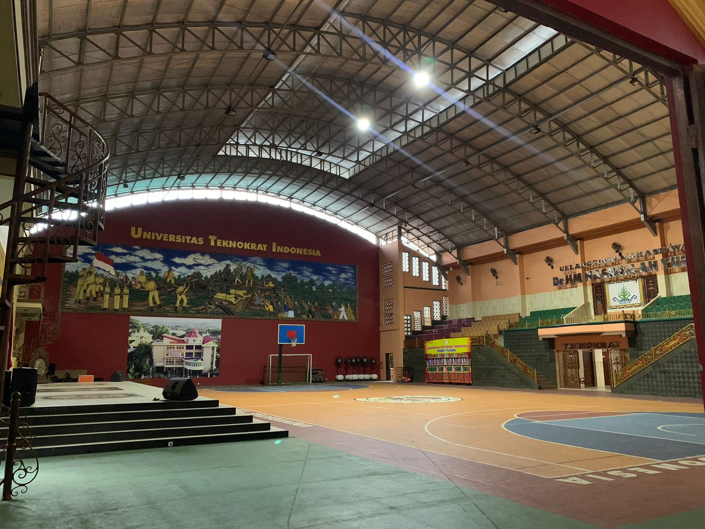
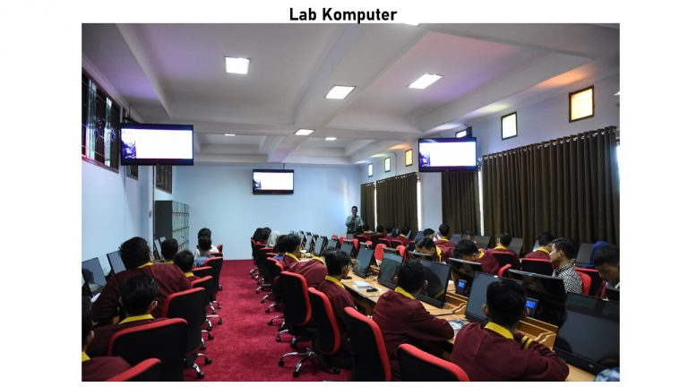

Sejarah Universitas Teknokrat Indonesia Lembaga Pendidikan Teknokrat yang telah ditunjuk sebagai model percontohan Program Pendidikan Sistem Ganda (link and match) tingkat nasional, didirikan pada tanggal 19 Februari 1986 dengan nama “Kursus dan Bimbingan Teknokrat” atas izin Mendiknas dan Kebudayaan (Depdiknas) Provinsi Lampung. Lembaga ini didirikan oleh Nasrullah Yusuf dengan modal sebuah sepeda motor Bajaj bekas yang dijual seharga Rp 1.600.000. Pada awal pendiriannya hanya menggunakan satu gedung yang disewakan seharga Rp. 1.000.000,- per tahun, dengan peralatan yang dirancang sendiri yaitu dua papan tulis, 50 kursi kayu, satu meja administrasi, dan satu mesin tik manual. Program yang diadakan pada awal berdirinya masih terbatas pada kursus Bahasa Inggris, Akuntansi, Bimbingan Belajar, dan Pengetikan Manual. Komunitas belajar saat pertama kali dibuka pada Maret 1986 terdiri dari 32 warga belajar Bahasa Inggris (2 kelas), 22 warga belajar Akuntansi, dan 8 warga belajar mengetik manual. Pada bulan Mei 1986 Bimbingan Belajar dimulai dengan 3 orang peserta. Tenaga pengajar saat itu hanya ada dua orang, yaitu Nasrullah Yusuf sendiri yang mengajar Bahasa Inggris, Akuntansi, Mengetik, Bimbingan Belajar dan merangkap Administrasi, dan Ibu Hernaini Nasrul mengajar Bahasa Inggris dan Manual Typing. Sekolah Tinggi Teknik Bahasa Asing (STBA) telah mendapat izin operasional dan berstatus badan hukum pada tanggal 25 April 2000 dan telah berstatus terdaftar pada Direktorat Jenderal Pendidikan Tinggi Depdiknas dengan Nomor; 48/D/O/2000. STBA Teknokrat memiliki satu program studi S1 yaitu Sastra Inggris dan dua program studi Diploma Tiga yaitu Bahasa Inggris dan Bahasa Jepang. Sejak tahun 2003 hingga sekarang, ketiga prodi di Sekolah Tinggi Bahasa Asing Teknokrat telah terakreditasi oleh Badan Akreditasi Nasional Perguruan Tinggi (BAN PT).

